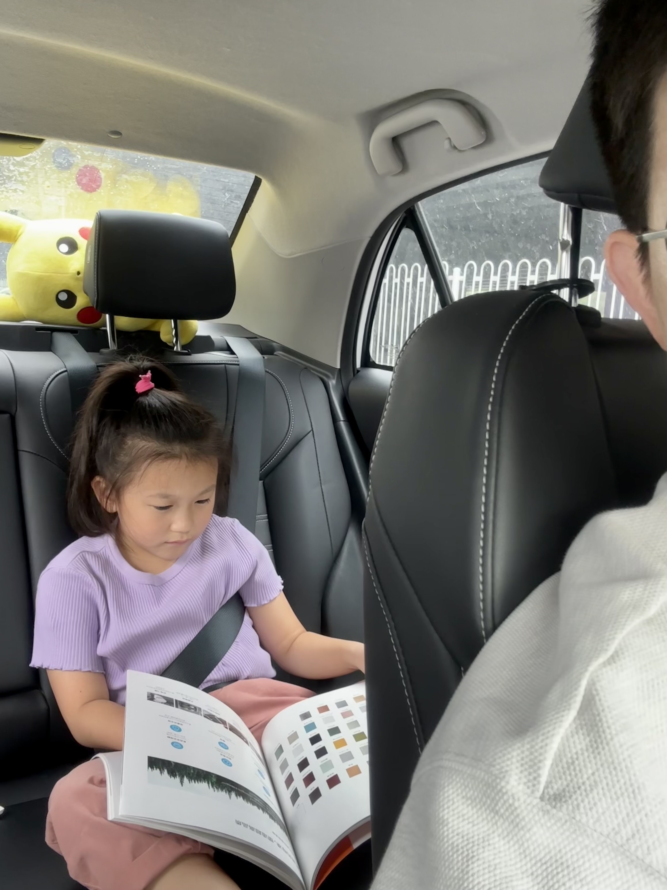
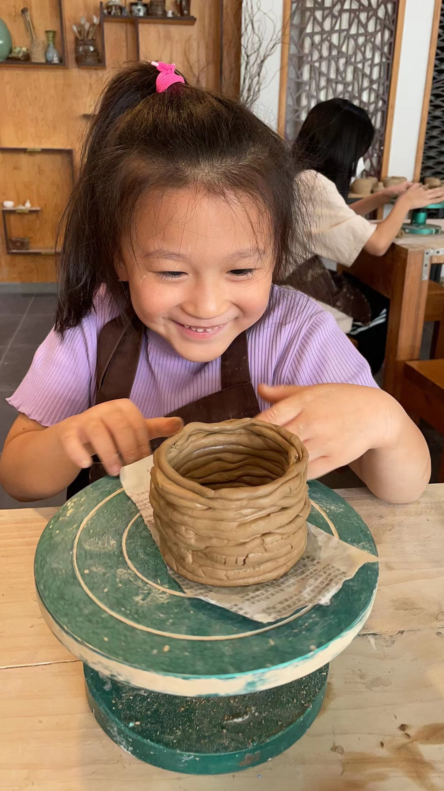

少年宫这个词我印象中只在我的小学阶段出现过，应该还是在一些青少年报刊杂志上看到的。
百度对其定义是：
我国在学校以外对少年儿童进行政治教育和开展集体文化活动的机构。
我的理解就是经国家认可的、公立性质的课外培训机构。
今年一月底，春节后从老家开车回北京，在服务区休息的时候遇到了另外一对也在休息的家长，稍微攀谈了一会发现是老乡，聊着聊着就聊到的对方爸爸的工作。对方爸爸在北京的少年宫里做老师，细问之下是在我们住的丰台区少年宫，再细问他教的是我娃一直想学的陶艺课程。
他说今年9月1日办理新学期入学，每周末上课，到时候如果我们想进的话可以联系他，他可以给我们塞个名额。正常来说少年宫是非常不好进的，几万人争几千个名额。8月份的时候我们联系他，他给我们加上了塞，让我们9月1日来上课就行了，价格也非常公道。
今天是念念第一天来少年宫上课，从家开车过来大概20分钟，这是我第一次带念念开车出门，之前也出过一次，不过距离很短就是从家门口到地铁站5分钟不到的路程，所以那次就不算了。
我让念念坐在后排，给她记上安全带，后排有一本装修公司之前给我们选装修风格和材料的书，她因为无聊就翻那本书看，时不时问我一些关于装修的问题，出奇的乖。

开到地方后发现少年宫不对外开放停车，而且因为是在一条繁华街道上，路上也停不了车。其他之前已经来过的家长会把车临时停一下，孩子下车后直接进去。我们是第一次来，人生地不熟，念念也不认识老师不知道教室在哪。于是我就跟她说我们需要找个地方停车，大概又开了5分钟，拐进一个胡同的小区里，找了地方停了车。
我看到导航上显示如果步行回去需要10分钟，再考虑到念念的步行速度可能就要15分钟了，上课就会迟到。我不想让念念第一次上课就迟到，于是跟她商量了一下，扫了一辆共享单车她坐在座位上我推着他走。时间还是有些紧张，中间有一段我就开始小跑，念念第一次坐在这么高的自行车座位上，脚够不到车蹬，既害怕又兴奋，刚开始跟我说她害怕，后边我跑起来后她说太刺激了😂。
跑到学校门口后我已经满身大汗，刚要进去保安拦住我说家长不能进，我和保安解释说我们第一次来，保安说孩子往里走有老师接她，后来来了个老师带着念念去了她们上课的教室。
看着念念进去后，我先步行回刚才停车的小区，把车开到离学校稍微近一些的另一个停车场停好了车，在附近买了瓶阿萨姆奶茶，坐在学校附近一条小路的石阶上用手机扣这篇流水账。

没多久老师把念念上课的照片发了过来，看到她满脸发自内心的喜悦，老父亲也就满足了。

在上课来的路上，念念说她以后要给我做酒杯、咖啡杯，哈哈，期待！